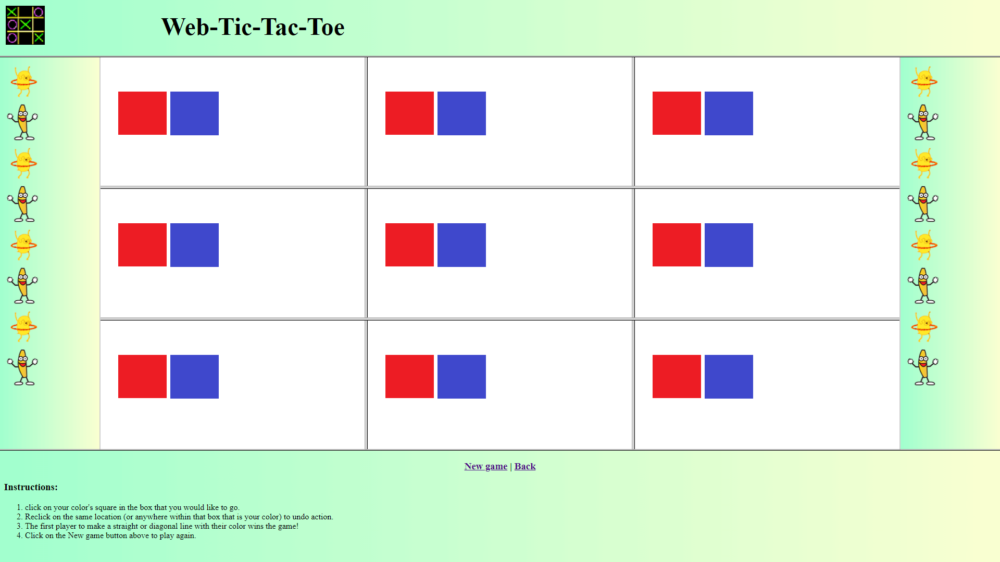
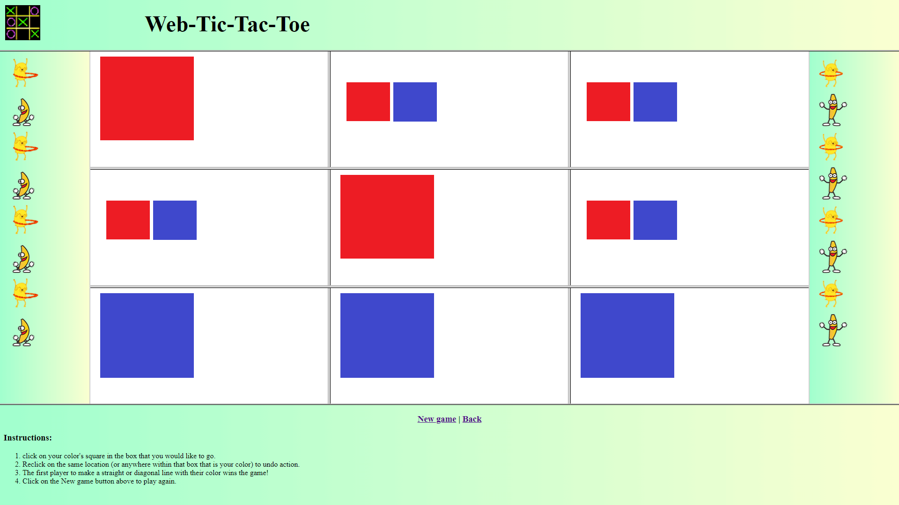
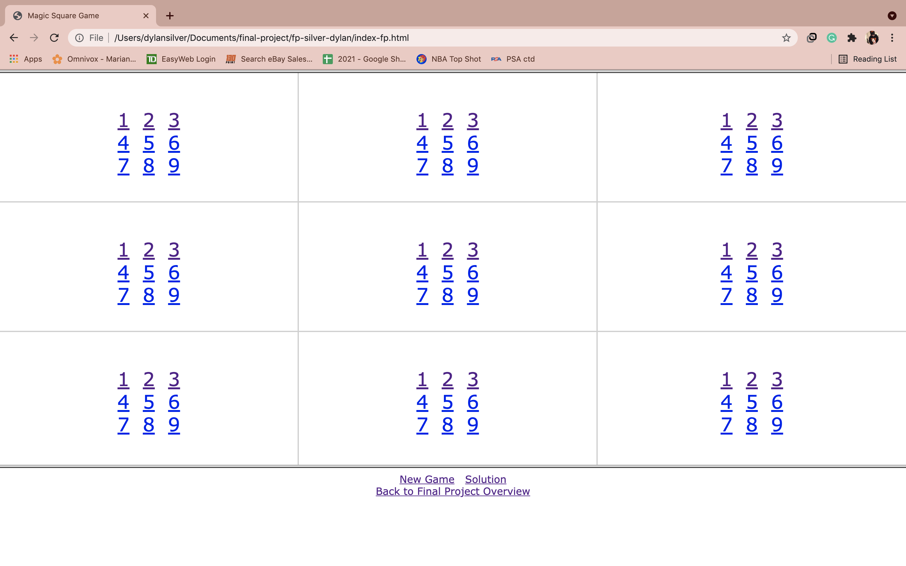
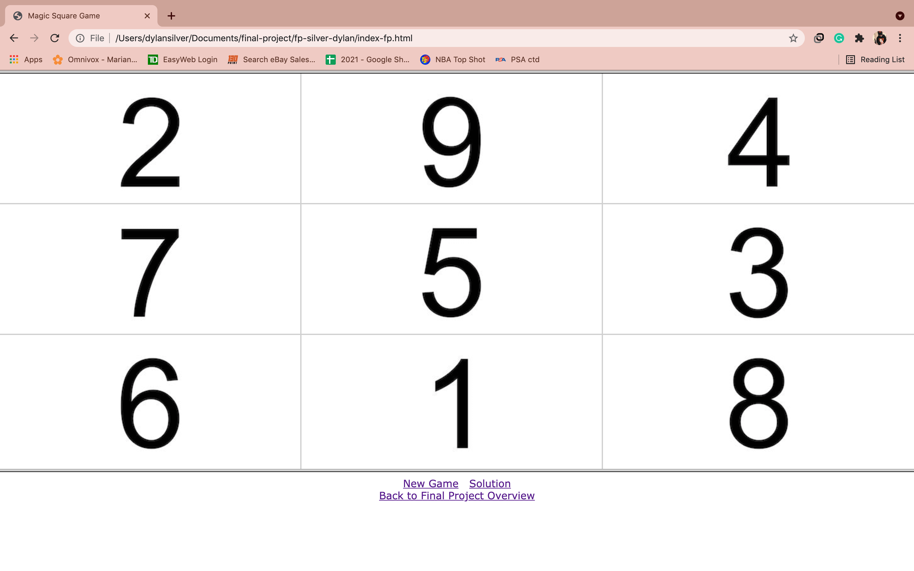

During our final project, we were given the opportunity to use a HTML editing software instead of text edit/notepad. For our project, we decided to use Atom Text Editor .
If you would like to see the text editor, here is a link: Atom Text Editor .
As our two choices, we chose to do TicTacToe and Magic Square. We chose to do these as we believed they would be slightly more challenging, and we’re always up for challenges. For TicTacToe (Evan), it is a game with a 3x3 frameset, and instead of X & O, you use a blue or red square. The goal is to have three of the same colour in a row, column or diagonally. For Magic Square (Dylan), it is also a game with a 3x3 frameset. Each frame displays the number 1 through 9, and the goal is to sum up the numbers to 15 either horizontally, vertically, or diagonally.
|  |  |
|  |  |
Atom.io is an Html and text editor that is very powerful for writing code that is highly customizable and provides a lot of tools to provide the best coding experience. To start up the editor after downloading it and having the window open, is to either open an existing project or to start a new one. To start a new project you just click the “file" button under the atom logo in the top left and click “new file". To open an existing project there are two options, first is to look in the welcome guide which is the first page you see once you open Atom. Once in the welcome guide you click “Open a Project" and scroll through your files manager and select your file or folder you want to open in the text editor. The second option is slightly more difficult but still useful if you deleted the welcome guide (which will reappear if you open a new window). You click on the “File" button and select the option “Open folder…" or “add project folder" and the rest is the same as the last method. It is very important that when you create a new file you put the extension at the end such as style.css, this is because the application will recognize the file type and will start to suggest tags in that language. The features we thought were most helpful were the tag, attribute and value suggestion feature, which basically means when writing the name of a tag in your file atom will suggest to automatically open and close the tag for you. The second helpful feature is that attributes, tags and values are all color coded so if a quotation mark is not closed like class="evan , the entire rest of the body will turn the same color as the value tag ( value tags are green if quotations are not closed the body following the tag will be green unless the value ends in a quotation mark). Atom also has tools that help with efficiency and collaborations with a team, in atom it is possible to split the window in half and have 2 files open at the same time side by side, this can be used in many ways to compare lines of code. Also, for collaboration Atom gives users access to “Packages" which are basically like google chrome browser extensions, there are some Packages such as “Teletype for atom" that allow users to collaborate on a project by seeing what the other members wrote in real time. Lastly, Atom is not perfect, one suggestion we have for the software is that we thought that an autosave feature would’ve been very helpful, like in Google Docs.
Back to project index: Home